PIVOT：用在线教师纠错连接成功轨迹与可学习监督
PIVOT: Progressive Intervention via Online Teacher Correction 研究困难推理任务中的教师辅助强化学习。作者为 Zhihao Yang、Boyuan Zheng、Puhui Tan、Yukun Chen、Kuan Zhang、Longze Chen、Jiaming Li、Renke Shan、Lu Wang、Xianpei Han；一作主机构为中国科学院大学，合作机构包括清华大学和中国科学院软件研究所中文信息处理实验室。论文于 2026 年 10 月 29 日首次公开，本笔记于 2026 年 11 月 2 日核验原文。唯一论文入口为 arXiv:2610.40576。作者项目页已由协调者独立核验为 HTTP 200，题名、机制和结果与论文一致；未核验到独立代码仓库，未复跑训练。原文承诺评审结束后发布训练代码和模型，不把计划开源写成已经开源。
困难推理任务中，同组回答全错会让结果奖励失去区分能力；强教师带来的成功轨迹也未必能被学生学会，而只沿错误轨迹做逐词指导又未必能产生完整纠错路径。
1. 背景和问题
可验证奖励强化学习把解题结果交给程序检查，减少了人工偏好打分的依赖。数学题可以校验最终答案，逻辑游戏可以检查网格约束，模型则通过同题多次采样获得优化方向。这个过程有一个容易被成功案例遮蔽的条件：当前学生必须在训练分布中偶尔走到正确答案附近。如果一组回答全部得到零分，组内相对优势就没有差别。增加采样次数也许能找到罕见成功，但当基础成功率接近零时，计算成本迅速上升，而模型并没有得到应该修改哪一步的具体线索。
PIVOT 的出发点不是否定结果奖励，而是研究怎样补足这个探索空洞。作者在 SynLogic 的困难 Survo、Minesweeper 和 Kakurasu 子集上选择了几乎不会成功的学生。Survo 要满足网格行列求和等约束，扫雷需要联合局部计数条件，Kakurasu 则有位置权重相关限制。它们都能程序验收，但正确性通常由一连串相互依赖的决策决定，早期错误会让后续推导越来越偏。因而，一个局部看起来合理的下一词预测，并不等于能完成整个可验证任务。这些设置把“有可靠评分器”与“有足够学习信号”的区别暴露得很清楚。
引入强教师似乎可以直接解决问题：让教师给出正确答案，学生做监督学习，或者把教师轨迹混入强化学习。论文首先指出，这里混杂着两个机制。第一个是改变学生能接触到的轨迹，使训练中出现有正奖励的推理过程；第二个是改变学生在这些上下文中接收的监督，告诉它如何产生教师做出的决策。前一个机制回答“是否看见成功路径”，后一个机制回答“是否学会独立走这条路径”。如果把教师前缀仅当作环境提供的条件，学生可能学会从较好的中间状态继续，却没有被直接训练去生成那个中间状态。
这也解释了为什么把所有正确示范一次性做成离线数据不一定足够。学生上线时遇到的前缀由自己的错误组成，与教师从头生成的流畅证明不同。离线教师轨迹可能包含学生还不具备的跳步、搜索策略或表示方式，即使结论正确，模仿目标也可能过远。PIVOT 更关心教师能否在学生已经到达的状态上示范一段可接续的修正。这是一种训练分布匹配诉求：监督应当覆盖学生会犯错的位置，而不是只覆盖教师自己的熟练状态。论文借鉴了在线模仿和蒸馏的动机，但并没有给出对任意推理任务的理论收敛保证。
另一条已有路线是在学生自己生成的每个位置，用教师的下一词分布做密集蒸馏。这避免了只看最终对错，却仍可能被错误轨迹限制。学生已经写下错误条件后，教师可能同时认为“先停下来纠错”和“沿当前思路继续”都有较大概率。如果后续训练序列仍然是学生原来的失败回答，学生看到的是纠错起点的概率提示，没有看到纠错如何展开、如何重新满足约束、以及怎样完成最终答案。对于需要回溯的网格问题，这种局部提示尤其容易与整段序列的方向冲突。
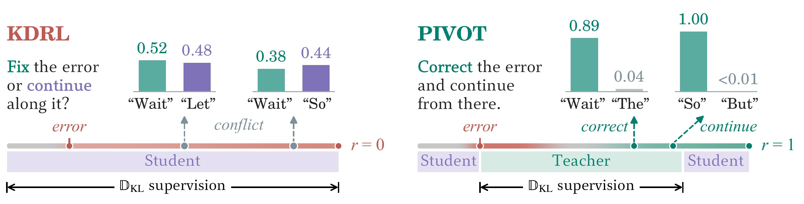
Figure 3 把这种区别画成一个 Survo 样例。左侧的 KDRL 沿学生生成的失败轨迹提供监督，红色时间线表示错误持续存在，最终奖励为零。在两个位置，教师对纠错词和继续推导词给出接近的概率：一处是“Wait”与“Let”的 0.52 和 0.48，另一处是“Wait”与“So”的 0.38 和 0.44。它们不是全数据统计，也不能推出所有教师分布都双峰；它们展示的是局部蒸馏可能遇到的具体歧义。右侧 PIVOT 让教师实际接管一段生成，先修正错误再继续推导，绿色段中两个示例分布变得更集中，轨迹最终获得正奖励。关键变化不在于某个英语纠错词本身，而在于后续上下文也被纠错行为改变，学生得以观察一个从自己错误状态出发的完整恢复片段。图中的紫色学生段与绿色教师段还提醒读者，教师只负责中间一段，学生仍要完成前后生成；图例不能理解为整个任务都由教师代做。这个样例支持研究动机，真正的总体收益仍需要后面的基线与消融来判断。
对推荐研究者，这个问题也有明确的迁移入口。推荐解释、用户意图推理、约束候选生成或广告投放 Agent 中，终局业务奖励往往更稀疏，且不一定像逻辑游戏一样干净。如果学生只得到点击或转化反馈，错误可能发生在检索、约束理解、候选筛选或工具调用的中途。PIVOT 提醒我们把“教师让轨迹更容易成功”和“学生从教师片段中学到什么”分别记录。不过，本论文没有推荐数据、线上流量或业务奖励实验，因此这些只是可设计的新实验，不应把逻辑游戏的提升直接换算成推荐效果。
还需要区分训练时辅助与推理时辅助。PIVOT 的教师用于产生训练样本和计算分布监督，最终报告的是学生独立解题性能；它不是每次测试都去请求强模型的级联系统。相应地，教师成本被放到了训练侧：需要教师生成部分轨迹，还要获取用于 KL 的预测分布。对只能调用文本 API、拿不到 logit 的团队，这个条件会直接影响可实现性。论文贡献应被理解为一种有明确教师访问能力要求的训练方法，而不是零成本复用任何黑盒教师的通用插件。
这篇论文把教师使用限定在训练环节，也保留了混合轨迹来源的复杂性。它没有用教师替换全部探索，更没有把可验证奖励变成逐步真实标签。验收器能判断最后的解是否满足约束，却不保证每个中间推理句都正确；教师分布同样只是指导信号，不能当作步骤正确性的金标准。评估时把基础准确度接近零的任务单列出来，是为了回答学生能否从低起点学到有效行为，而不能据此推断所有普通难度任务都需要相同强度的教师帮助。这个条件也决定了后续复现实验应同时记录起点能力、剩余生成预算和教师错误，不宜只记录最终一个均值。
2. 方法
2.1 在学生状态上插入教师片段
PIVOT 保留普通学生轨迹，同时加入教师辅助轨迹。一个提示默认产生八条回答，其中六条由学生独立生成，两条采用“学生前缀—教师片段—学生续写”。学生先尝试固定长度，教师读取题目与这个尝试并继续生成，随后学生从已经包含教师修正的上下文恢复。教师并不被要求必须找到某个预先定位的错误位置；固定位置介入只是给它一个已经由学生构造的状态。是否真的发生回溯、补全还是顺着已有正确思路继续，取决于教师条件生成。
符号解释：$q$ 是题目，$\tau$ 是完整回答，$h_t$ 是第 $t$ 个词之前的题目和前缀，$\pi_\theta$ 是学生策略，$R$ 是程序验收奖励。序列概率分解说明学生在测试中必须自己生成所有位置；验收器只回答整段是否正确，不直接指出中途应改哪里。后续教师监督要弥补的是这些中间决策的信息，而非替换最终奖励定义。
符号解释：$u$ 和 $w$ 分别是学生前缀与续写，$v$ 是教师生成的中间片段，$\ell_u$、$\ell_v$ 是前缀和教师段长度，$\theta_{\rm old}$ 表示采样时的学生参数，$\pi_T$ 是教师。这个联合分布明确包含两个来源，不能当成纯学生在线样本。把 $\ell_u$ 设为零就退化为教师先开头；设为正值才使教师条件依赖学生已做出的决策。教师介入后的状态更可能接近可完成路径，但这本身并不保证学生已经学会产生教师段，因此还需要下一节的直接监督。
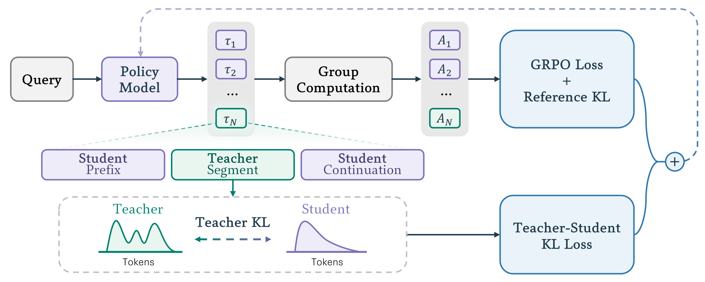
Figure 1 上半部分是每题轨迹组进入奖励与优势计算，再优化 GRPO 和参考 KL；下半部分把其中一条辅助轨迹放大，标出学生前缀、教师片段和学生续写。绿色教师段既改变了轨迹会访问的状态，也成为教师—学生 KL 的监督范围。两条箭头在右侧汇合，说明终局奖励与中间分布匹配被共同优化，不能只把方法概括成在回答中插入一段提示。尤其要看清教师 KL 的虚线框只覆盖教师生成部分：它不是对所有学生词做无差别蒸馏，也不是把教师段排除在学习之外。组计算把辅助与非辅助回答放在同一道题的比较中，从而让成功示范影响相对奖励；KL 则使学生直接学习示范中的局部选择。图中没有画出独立错误检测器，因此不能凭框架图推断系统会自适应发现最佳纠错点。教师何时接管、接管多长，仍由固定预算设置控制，图表达的是信号连接方式而非自动诊断能力。训练完成后，这两个教师相关分支都可以移除，评测时保留学生自身策略。
另外，教师与学生的概率曲线强调监督对象是条件分布，不只是教师实际采出的一个词。若改成只对选中词做交叉熵，会丢失其他合理续写及尾部概率信息，因此不能未经实验把这种实现当成等价替换。上方奖励路线还包含不经教师辅助的六条回答，它们保留学生当前策略的自主探索，也使训练不会完全由教师状态占据。两个分支共同作用后，学生在测试时独立生成的质量才是最终检验；辅助轨迹自身更容易通过验收，只能说明训练样本变好了，不能单独充当学生变强的证据。
2.2 用结果奖励和教师段KL共同更新
普通 GRPO 把同题采样的奖励归一化为优势，并以裁剪重要性比率控制更新幅度。PIVOT 沿用这一优化框架，不额外设计一个奖励模型。需要注意，论文给出的目标按整批轨迹的词数归一化，因而轨迹长度与教师段占比也会影响各部分在实际批次中的分量。不能仅凭每题八条回答就断言不同方法的有效训练词数、教师计算量或优化成本完全相等。
符号解释：$A_i$ 是同题轨迹组的归一化优势，$r_{i,t}$ 是当前学生与采样学生在观测词上的概率比，$\epsilon$ 是裁剪阈值。正优势鼓励增加该轨迹词的概率，负优势则反向作用，裁剪避免一次更新过大。所有回答同为零分时，结果奖励无法提供有用区分，教师辅助轨迹和密集监督正是为这个情形引入信息。原文使用混合来源轨迹的实现细节仍需结合最终代码复核，不能把公式理解为已经证明任意教师采样都具有无偏的在线策略梯度。
符号解释：$\pi_{\rm ref}$ 是固定参考策略，$D_{\rm KL}$ 衡量当前学生分布与参考分布的差别。参考 KL 约束学生偏移，和教师 KL 的角色不同：参考项用于正则化，教师项提供新的可学习目标。两者即使都写成 KL，也不能混为同一个教师信号。论文默认参考系数为 0.01，GRPO 裁剪阈值为 0.2。
符号解释：$S_T$ 只包含教师片段中的位置，正向 KL 以教师分布为参照要求学生覆盖教师支持的选择，反向 KL 则更强地抑制学生把概率放在教师认为不合理的词上。这里的“覆盖模式”和“集中模式”是解释优化倾向的直觉，不是论文直接测量了推理模式数量。实现上保留教师概率最高的三十个词，并把其余概率质量合成一个尾部桶；因此不是简单丢弃尾部并把前三十项重新当成完整词表。
符号解释：$\beta_{\rm ref}$ 和 $\beta_T$ 分别控制参考约束与教师监督强度。教师项系数从 0.1 余弦衰减到零，意味着训练后段逐渐减弱直接教师牵引。总目标把“有机会遇到成功”和“能学会教师决策”连接起来，而不把任何一项独立当作充分条件。教师纠错也可能犯错，最终奖励与混合学生轨迹仍承担检验和维持学生自主探索的作用。
2.3 介入位置与指导预算的实际配置
默认学生先生成五百一十二个词，教师在逻辑游戏中最多生成四千零九十六个词、在数学中最多八千一百九十二个词，学生随后用剩余回答预算完成解题。总回答上限分别为八千一百九十二与一万六千三百八十四。这个设置给学生留下初步尝试，也给教师留下足以展开推理的连续片段。作者对介入位置、教师能力、固定教师词预算分配和概率支持大小做了消融，但没有学习一个随题目难度变化的控制器。
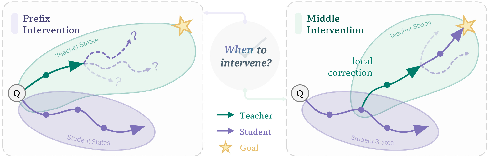
Figure 5 用状态空间示意为什么先让学生尝试。左侧教师从题目出发给前缀，教师与学生的可达轨迹形状不同，学生接管时可能无法完成后续；右侧教师进入学生已到达的状态，进行局部修正后再交还学生。星形表示目标，紫色与绿色分别表示两种策略的路径。这幅图不是实际搜索空间的可视化，也没有给出距离、概率或收敛界；它把论文希望实现的训练分布对齐画成可理解的示意。具体系统仍是自回归文本续写，既没有显式状态图，也没有保证每个教师段只做最短修复。图中“局部”应理解为依赖学生前缀的条件指导，而非已经约束了教师的编辑幅度。它与 Figure 1 互补：前者解释样本为什么更贴近学生，后者解释这些样本怎样进入训练目标。真正支持这个观点的证据是替换前缀来源的控制实验，而不是这幅示意自身。
指导预算在这里有实际的成本含义。即使保持每题两条辅助轨迹，长教师段仍需要教师推理、logit 存储和学生教师分布比较；更强教师可能提高样本质量，也会改变训练支出。教师只在训练出现，因此线上学生推理接口可以保持普通形式，但训练效率需要按总 GPU 时间、有效学习词数和最终成功率联合衡量。论文主要给出质量结果与固定教师词数消融，没有把所有基线统一到完整端到端成本，因此不能把改进直接表述为更省训练算力。
原文用这张示意联系在线状态分布与指导可学习性，但没有定义几何距离或证明教师一定能把学生状态映射回可行区域，因此图中的路径不能用来定量估计恢复成功率。
3. 实验结果
3.1 实验设置与前缀监督的诊断
逻辑游戏每类有两千道训练题和五百道测试题，学生为 Qwen3-1.7B，教师默认 Qwen3-4B-Thinking。数学学生为 Qwen3-4B，教师仍为 Qwen3-4B-Thinking；虽然参数规模相同，具体推理版本与条件分布不同，不能据此认为教师等同于学生。数学题来自 Polaris-53K 和 Skywork-OR1-RL-Data 数学部分，基础学生对每题采样八次，只保留最多答对三次的题，清理无效答案并对 AIME 与 MATH500 去重后，抽三万训练、一千验证、两千分布内测试题。训练题中 77.7% 在筛选时一次也没做对，说明困难程度是按该学生定义的，不是对所有模型统一的绝对难度。
训练使用 verl、GRPO、学习率 0.000003、每批六十四个提示和三十二个提示的小批次，学生与教师采样温度均为 0.7。逻辑游戏训练三个 epoch，数学一个 epoch，不加额外格式或长度奖励。逻辑游戏、Math-ID 和 MATH500 报 avg@8 与 pass@8；AIME 报 avg@64 与 pass@64。前者反映多次采样中平均答对表现，后者反映多次尝试至少成功一次的覆盖，两者不能互换。AIME 题量和预算又不同，不能把其 pass@64 与逻辑游戏 pass@8 当同一种业务成功率比较。
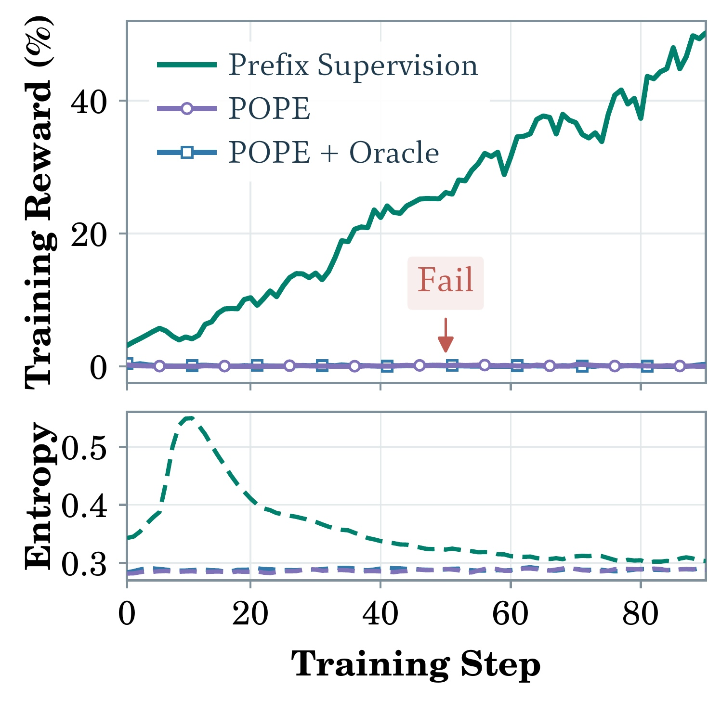
Figure 2 的横轴是训练步数，上方是 Survo 训练奖励，下方是生成熵。绿色前缀监督曲线逐渐上升，而紫色 POPE 和蓝色加入 oracle 前缀的 POPE 仍接近零；这说明至少在这个设置中，把更正确的前缀交给学生，并没有自动让它学会独立解题。图例中的 oracle 指从正确解中过滤的前缀，不是测试时可用的真实答案接口。熵曲线提供了另一个观察角度：监督方案早期的探索分布发生明显变化，随后收敛；两条前缀辅助曲线几乎停留在原来的低奖励状态。不过，熵的高低本身不能作为推理能力指标，训练奖励也不能代替独立测试。附录 Table 3 给出最终前缀比较，带噪前缀的 avg@8 为 0.03，oracle 前缀为 0.14，Prefix-Fwd 为 59.05，pass@8 分别为 0.20、0.91 和 94.20。这个前缀诊断实验与后面的介入位置消融不是完全同一对照，不能把 59.05 和 Table 1 的 45.90 拼成同一条收益链。它最稳妥的结论是：直接监督教师提供的行为具有价值，而不只是前缀更容易完成。
绿色曲线的改善同时需要对应测试结果支持，不能仅以训练熵下降判定已经学会稳定策略；熵过低也可能意味着模式坍缩，因此这里应把它当诊断量而不是独立质量目标。
3.2 教师何时介入：短学生尝试优于过晚接管
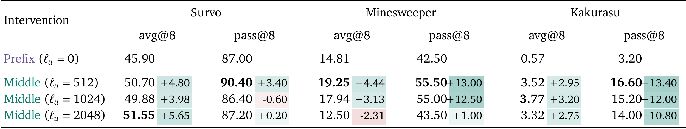
Table 1 在相同教师段预算下比较从头介入与先让学生生成五百一十二、一千零二十四或两千零四十八个词。每个游戏分 avg@8 和 pass@8 两列，单元格小字是相对前缀介入的绝对百分点变化。五百一十二词介入时，Survo 从 45.90 到 50.70，Minesweeper 从 14.81 到 19.25，Kakurasu 从 0.57 到 3.52，三个平均准确度都提高；对应 pass@8 为 90.40、55.50、16.60。学生先做一段尝试对三个任务都有帮助，但不存在“等得越久越好”的单调规律：扫雷在两千零四十八词介入时降至 12.50，低于从头介入的 14.81；Survo 的最高 avg@8 反而在较长前缀，但 pass@8 不是同列最佳。这个差异提示预算应围绕任务和评测目标选择。晚介入消耗了学生纠错后完成答案的空间，原文观察到更多截断；因此改位置同时改变剩余续写预算，不能只用“后面的词信息量更高”解释结果。
读这张表还要区分教师指导预算与总长度预算：教师片段的长度上限不变，但学生前缀越长，后面能自主续写的空间越小。因此，较晚介入的下降可能同时来自状态更难恢复和答案被截断，表格本身没有把两者完全拆开。作者附录用同一Survo题展示晚接管时教师和学生都能继续解约束，却来不及在原上限内给出最终答案。这使截断成为实际训练资源问题，而不只是思路错误。若未来引入动态介入控制，应该让它同时看预计修复长度，而不是只依据当前错误概率。
此外，Survo在一千零二十四词设置的pass@8为86.40，反而略低于前缀介入的87.00，进一步表明单一位置并不同时优化全部任务与指标。五百一十二词是综合多任务后的稳健默认选择，不是由理论证明的最优常数。
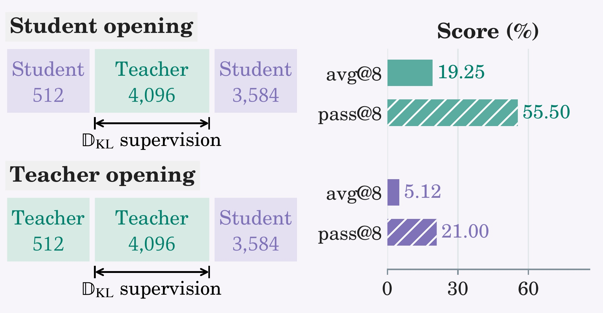
Figure 4 在扫雷上进一步替换最开始的五百一十二词来源：上方由学生开头，下方由教师开头，后续仍是同长教师段和学生续写，教师段监督区间也相同。学生开头得到 19.25 的 avg@8 和 55.50 的 pass@8，教师开头却只有 5.12 和 21.00。若收益仅来自把监督移到较晚、更有信息的位置，教师开头理应不差；实际下降支持“教师应适应学生已访问状态”的解释。这里不能反过来说教师开头普遍比学生差，因为这只是扫雷的一个具体条件对照，教师前缀可能包含学生难接续的推理策略。它排除的是一种过于简单的时序解释，仍没有完全分离前缀风格、状态难度和学生可达性。图中实心与斜线条分别对应平均准确度与至少一次成功覆盖，两个指标都下降，使结果比单个平均值更有说服力，但仍需要更大范围模型与题型复核。
这个控制实验的额外价值在于保持监督区间不变，使“只是更晚位置的词更重要”这一解释受到约束；但学生与教师前缀的具体内容仍不同，所以它不能独自证明所有差异都来自分布匹配。
3.3 正反KL的差异取决于学生起点
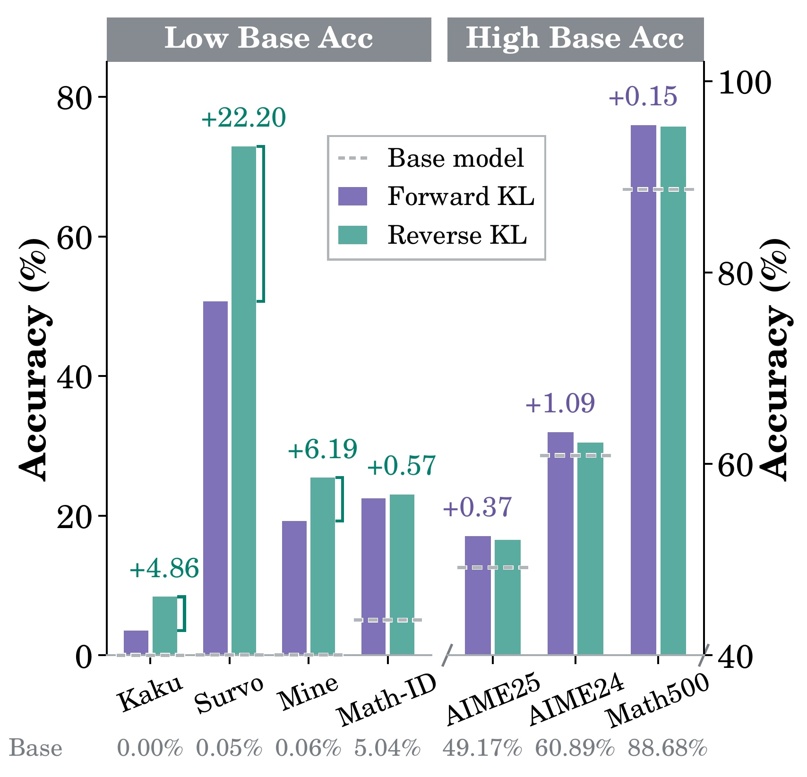
Figure 6 分成左右两组，左边基础成功率接近零的逻辑游戏与困难 Math-ID，右边基础表现较高的 AIME 与 MATH500。它们纵轴范围不同，虚线是基础模型，标出的数值是两种 KL 之间的百分点差，不能把柱子高度跨面板比较。反向 KL 在 Survo 比正向高 22.20 个百分点，在扫雷高 6.19，在 Kakurasu 高 4.86，在 Math-ID 高 0.57；但正向 KL 在 AIME 2024、AIME 2025、MATH500 分别略高 1.09、0.37、0.15。由此可见，作者推荐反向 KL 是因为困难任务收益更大，而非反向在所有场景都是最优。模式寻优与模式覆盖是作者提出的可能机制：当学生还没有可行策略时，集中到教师支持的路径更有帮助；当学生已有较好策略时，覆盖更多备选路径可能更有用。论文没有直接量化推理模式多样性，因此应把这个解释保留为与现象相容的假说，而不是已经完成的机制证明。对于工程复现，这意味着应按训练初始成功率和目标任务分别选监督方向，并保留双方向对照，而不是照搬摘要中的最佳变体。
3.4 教师更强、片段更长与支持集更大不是同一件事
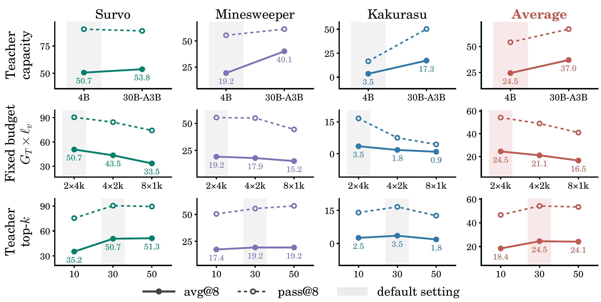
Figure 7 每列是一个游戏或三者均值，每行只改变一个因素，并且这些消融使用的是中段介入加正向 KL。第一行把教师换为 Qwen3-30B-A3B-Thinking，扫雷 avg@8 从 19.25 到 40.12，Kakurasu 从 3.52 到 17.27，说明方法可以利用更强教师，但这里并没有保持教师算力相同。第二行固定每题教师词数预算为八千，把它分成两段四千、四段两千或八段一千；三游戏均值从约 24.5 下降到 21.1、16.5。较少但完整的推理片段比很多短提示更有用，可能因为短片段在纠错逻辑尚未展开时就交还学生。然而这个结论受给定任务和长度上限约束，不能推出任何任务都应尽量延长教师输出。第三行把教师分布支持从十个词扩到三十、五十：均值为 18.4、24.5、24.1，三十比十好，继续增大没有一致收益，Kakurasu 还下降。实线与虚线分别是 avg@8 和 pass@8，阴影标默认设置，读图时应同时看二者。这里真正被固定的是教师生成词预算或单因素配置，尚不是完整训练耗时；分布匹配和教师大小仍可能显著改变总成本。
3.5 完整方案在困难逻辑游戏上的收益与残余失败
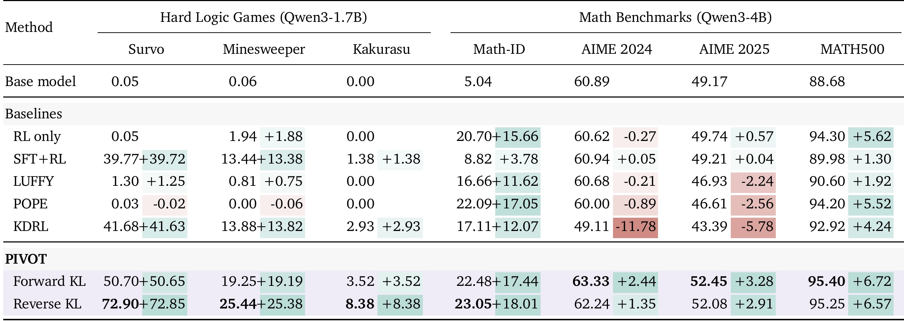
Table 2 把五类基线与两种 PIVOT 放在一起。逻辑游戏的基础学生几乎全错，普通强化学习只在扫雷从 0.06 到 1.94，Survo 和 Kakurasu 基本不动；这与稀疏奖励动机一致。SFT+RL 通过五千条正确教师轨迹获得明显启动收益，KDRL 的密集监督进一步达到三游戏 41.68、13.88、2.93，是逻辑游戏里最强基线。反向 KL 的 PIVOT 达到 72.90、25.44、8.38，三者均值约 35.6，对比 KDRL 约 19.5，提高约 16.1 个百分点，约为其 1.82 倍。不能把“接近翻倍”理解为每道题都提高相同比例，也不能说平均成功率达到七成：72.90 只属于 Survo。Kakurasu 即使大幅超越基础模型，平均准确度仍低于一成，留下了很大的困难任务缺口。表中的数学结果显示改善幅度也更温和，反向 PIVOT 的 Math-ID 为 23.05，对比最强基线 POPE 的 22.09，仅高 0.96 个百分点。这些差别说明收益取决于学生能力与任务结构，摘要中的均值不能代替逐任务判断。
从各基线可以进一步看出，先做监督启动与在在线状态上蒸馏各有作用范围。SFT+RL在Survo很好，却在Math-ID只有8.82；POPE在逻辑游戏几乎失败，但Math-ID达到22.09。这些差异与任务起点、教师前缀是否容易接续以及训练目标有关，不能用一个全局排名概括。反向PIVOT在所有三个逻辑游戏都赢，因而均值改善没有被单一游戏完全制造；但在数学上的绝对领先明显缩小。表中绿色小数字是相对基础模型的百分点变化，不是相对同列最强基线的提升，也不是乘法百分比。若计算增益，应先明确比较对象，再用原始大数字相减，避免把72.85误写成相对KDRL的提升。
数学与逻辑使用不同学生规模，所以也不能把跨任务提升差异只归因于题型本身；这里的机制判断应建立在同一列的配对比较上。
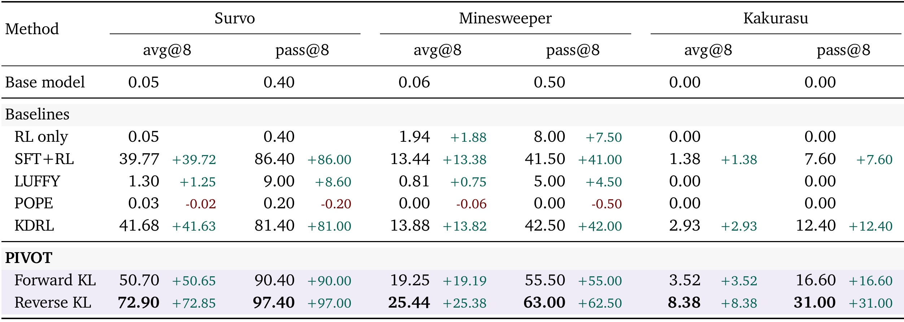
Table 4 将主表只显示的平均准确度扩展到覆盖率。反向 PIVOT 的 Survo avg@8 为 72.90、pass@8 为 97.40，扫雷分别 25.44 和 63.00，Kakurasu 分别 8.38 和 31.00。这两组数字的差异尤其重要：Kakurasu 在八次尝试中覆盖近三成题，并不表示随机一次回答有三成正确；如果部署只允许一次生成，相关的是平均采样表现，而多次尝试还需要验收器选择。KDRL 的 pass@8 分别是 81.40、42.50、12.40，正向 PIVOT 为 90.40、55.50、16.60，反向版本在这组低起点任务上同时改善稳定性与覆盖。但这些结果没有单独报告多随机训练种子置信区间，不能把任意一列的微小差异当作稳健的普适结论。对于推荐约束生成的迁移，多个候选里是否存在可行项与单次生成的质量同样应拆开评估；本表提供的是如何区分指标的例子，并非推荐线上收益证据。
对于同样的八次尝试预算，pass与avg的间距也反映稳定性：Survo的学生已能在多数采样中答对，Kakurasu则更像少数尝试偶然触及正确路径。若任务没有可靠自动验收器，即使八次里有一个正确答案，也未必能在实际系统选中它；因此覆盖率是有选择条件的能力上界，不能直接折算为用户成功率。把Kakurasu的31.00与Survo的97.40并列，还能看出强教师并没有填平所有任务难度差异。后续复现应检查错误是否集中在特定网格规模或约束结构，再决定改教师能力、介入位置还是续写预算，而不是仅通过增加采样把覆盖数字抬高。
这张完整表补足了主表的指标分母，也提示未来需要同时报告多次采样的相关性：八个答案如果高度重复，增加尝试未必扩大覆盖；若答案差异很大，则需要额外选择机制。
3.6 数学泛化更接近温和改进，仍要保留负向基线
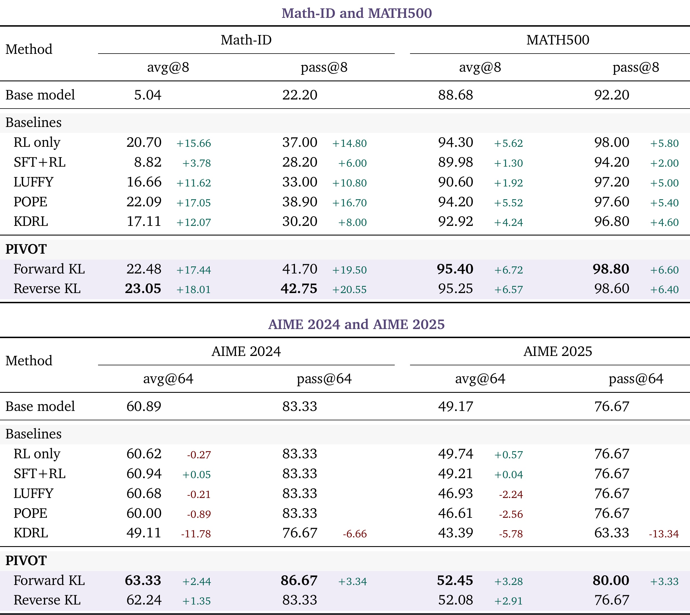
Table 5 上面是 Math-ID 与 MATH500 的八次采样，下面是 AIME 的六十四次采样，同一原始表包含两个评测面板。Math-ID 从基础 avg@8 5.04 提高到反向 PIVOT 的 23.05，pass@8 从 22.20 到 42.75；MATH500 上正向版本为 95.40 和 98.80，略优于反向的 95.25 和 98.60。AIME 2024 正向 avg@64 为 63.33，高于基础 60.89；AIME 2025 为 52.45，高于 49.17。反向对应 62.24、52.08，pass@64 却与基础分别同为 83.33、76.67，说明平均采样改进没有必然扩大至少一次答对的题目集合。更值得留意的是 KDRL 在 AIME 2024 从基础 60.89 降至 49.11，2025 从 49.17 降至 43.39，说明教师辅助或蒸馏并非天然安全；LUFFY 和 POPE 也在若干 AIME 列低于基础。表中负向结果支持联合设计的必要性，但不能由此断言这些基线在其原始论文中无效，因为本文重新实现和任务配置有自己的预算与超参数。AIME 每套题数量有限，覆盖率的约三点三三变化可能只对应一题，读者应结合题级分析与重复评测，而不是只看加粗最高值。
从比较公平性看，各方法共享八条 rollout 的数量，但教师使用方式不同。SFT+RL 先做额外离线监督；LUFFY 替换一条完整教师轨迹；POPE 的教师前缀不进入损失；KDRL 在学生所有词上做反向 KL，支持集取学生前三十项且系数恒定 0.1；PIVOT 在教师段上取教师前三十项并衰减系数。因而，主表比较的是完整方法配方，不能把所有收益只归因于“中途接管”一个变量。作者用分机制诊断和若干单因素消融减少解释歧义，但要复现因果贡献，还应增加完全匹配的支持集、系数日程和教师计算预算对照。
此外，论文的泛化证据限于逻辑游戏与数学推理，测试仍使用 thinking 模式、温度 0.7 与较长生成上限。没有代码生成、开放问答、真实工具调用或业务用户交互实验。训练时能精确验证最终答案，是这些任务有效工作的基础；若迁移到没有可靠验收器的推荐解释或业务 Agent，错误教师段可能同时误导轨迹与监督，而终局奖励又未必及时纠正它。结果应被看成一个清楚的教师辅助训练设计与受控证据集合，而非跨场景可靠性的承诺。
4. 总结
4.1 我的判断
PIVOT 最有价值的地方是把教师辅助拆成两个可以检查的对象：教师改变了学生访问哪些状态，教师监督又让学生学会哪些行为。只提供好前缀、只在坏轨迹上给下一词概率，都可能遗漏另一半。把教师接入学生的短尝试，再直接学习教师纠错段，使成功示范与学习目标出现在同一条序列上，这个连接比“使用更强教师”更具体，也更便于设计消融。它的证据最强在基础成功率几乎为零的三类逻辑游戏，对已经具备较强数学能力的学生，收益更小且最优 KL 方向不同。
对推荐或广告 Agent 的迁移，我会先选择可程序验收的中间任务，例如预算约束下候选生成、可验证工具调用参数或明确业务规则推导，再检查教师能否从学生失败状态给出可接续修复。这个建议是工程推断，论文没有验证这些业务场景。直接把真实点击或收入作为唯一结果奖励，往往比网格游戏更噪，不能期待相同的清晰回报。训练教师与线上学生分离虽然有部署吸引力，但必须把教师生成、概率分布访问和存储成本计入完整预算。
4.2 局限与后续跟进
首先，评测只有逻辑游戏和数学，缺少开放推理、代码与真实交互，任务迁移边界仍待检验。其次，固定五百一十二词介入和固定教师段预算不能适应学生随训练进步的状态，也可能在简单题浪费指导、在困难题过早结束。第三，正反 KL 的模式解释尚未通过直接的策略多样性测量验证，应避免把观察相关性写成机制定论。第四，教师 logit 需求限制了纯文本黑盒教师的适用性，而独立代码仓库与检查点尚未核验到，复现配方仍需等待。第五，各基线的教师词数、支持集和系数日程并非全部相同，没有完整端到端成本与多种子区间，细小增益的稳定性和效率不能仅看主表确认。
后续值得做三组具体实验。第一，按教师总推理词数、GPU 时间和监督位置数配平预算，同时保持支持集与 KL 衰减相同，区分轨迹连接本身和优化配方的贡献。第二，记录学生独立成功率、纠错后成功率、截断率及教师错误率，随训练动态调整介入时间，检验固定配方是否只是早期最优。第三，保留题级错误轨迹和正反 KL 对照，检查改进来自学会新恢复策略，还是只增加原来可解题目的采样稳定性。第四，在可验收的工具任务上先做离线迁移，再考虑更噪的业务奖励，防止教师错误被同时复制进探索与监督。
还应关注发布承诺与实验透明度：原文表示评审结束后会公开完整训练代码和学生检查点，当前作者项目页已核验，但独立代码仓库与检查点尚未核验到，因此这一轮核验的是论文与项目页的配置和数值，不能声称已经复现训练。待工件公开后，最先核查混合教师轨迹在策略损失中的掩码、重要性比率处理和尾部概率桶实现，因为这些细节会影响是否忠实复现所描述的学习信号。
因此，我会把 PIVOT 当作研究教师指导“怎样进入训练过程”的实用参考：困难任务的大幅提升值得关注，Kakurasu 的残余失败、AIME 的温和收益和教师成本同样属于结论的一部分。只有把这些条件一起保留，才能判断它适合解决哪类学生学习瓶颈。